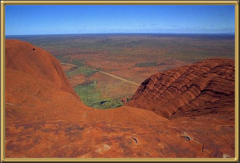

Photographer: Mark A. Stokes
My brother took this photo from the top of Uluru (Ayers Rock). He tells me the view is even better than this photo shows - but personally I wouldn't want to make the climb! :) Anyway, when I visited the Rock I was in plaster and hobbling around on crutches - definitely the perfect excuse!